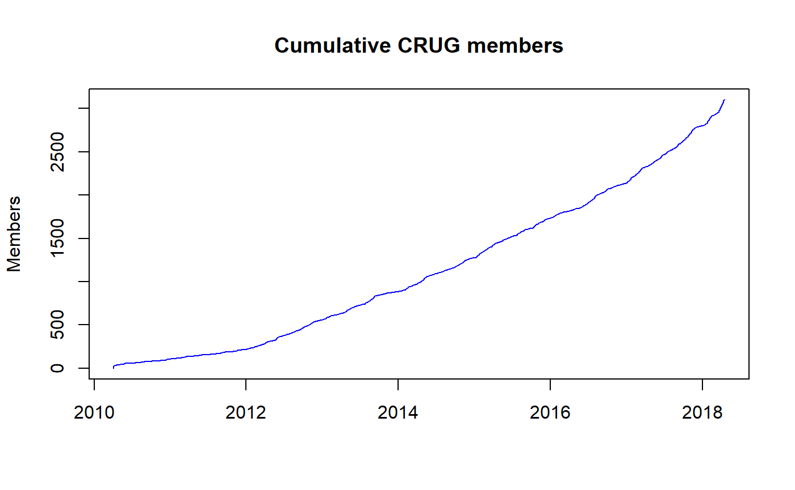
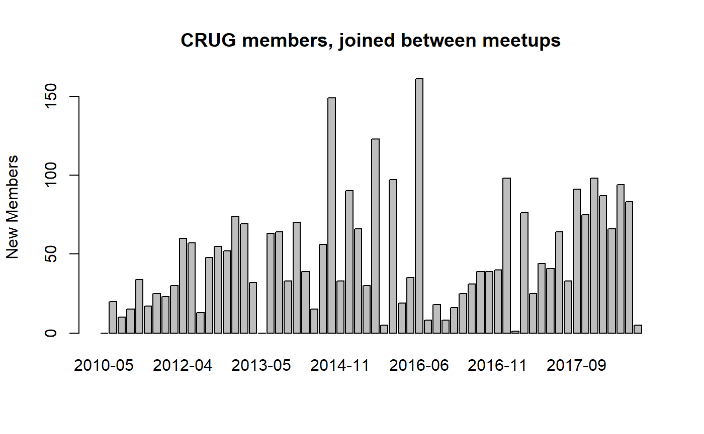

New Meetup Members
Justin M. Shea
April 17, 2018
new-members.RmdQuestion: How many members joined since January of 2017?
Load the member list data.
data(member_list)Lets plot it!
plot(y = member_list$Count.Index, x = member_list$Joined.Group.on, type = "l", col = "blue",
main = "Cumulative CRUG members",
ylab = "Members", xlab = "")
How many joined since January 2017?
members_2017_present <- subset(member_list, Joined.Group.on > "2017-01-01")
max(members_2017_present$Count.Index) - min(members_2017_present$Count.Index)## [1] 961How many joined since the last meetup?
First, get a unique ordered list of Meetup dates
Meetup_dates <- sort(unique(member_list$Last.Attended))
new_members <- subset(member_list, Joined.Group.on > Meetup_dates[NROW(Meetup_dates)])
NROW(new_members)## [1] 6How about the number of new members between last meetup and the one prior to that?
new_members2 <- subset(member_list, Joined.Group.on <= Meetup_dates[NROW(Meetup_dates)] &
Joined.Group.on > Meetup_dates[NROW(Meetup_dates)-1])
NROW(new_members2)## [1] 84Since was getting repetitive, we’ve created a function new_mem_counter to count the number of new members joined between meetups.
new_members <- new_mem_counter(member_list)
kable(new_members, align = 'l')| Date | New |
|---|---|
| 2010-05-27 | 0 |
| 2010-08-26 | 20 |
| 2010-10-20 | 10 |
| 2010-12-16 | 15 |
| 2011-03-23 | 34 |
| 2011-06-02 | 17 |
| 2011-09-08 | 25 |
| 2011-11-17 | 23 |
| 2012-01-26 | 30 |
| 2012-04-05 | 60 |
| 2012-05-30 | 57 |
| 2012-06-18 | 13 |
| 2012-08-15 | 48 |
| 2012-10-03 | 55 |
| 2012-11-14 | 52 |
| 2013-02-07 | 74 |
| 2013-05-01 | 69 |
| 2013-05-30 | 32 |
| 2013-05-31 | 0 |
| 2013-08-08 | 63 |
| 2013-09-11 | 64 |
| 2013-11-14 | 33 |
| 2014-02-19 | 70 |
| 2014-04-05 | 39 |
| 2014-04-16 | 15 |
| 2014-05-14 | 56 |
| 2014-10-23 | 149 |
| 2014-11-13 | 33 |
| 2015-01-29 | 90 |
| 2015-03-12 | 66 |
| 2015-04-02 | 30 |
| 2015-07-28 | 123 |
| 2015-07-31 | 5 |
| 2015-10-21 | 97 |
| 2015-11-05 | 19 |
| 2015-12-02 | 35 |
| 2016-06-05 | 161 |
| 2016-06-12 | 8 |
| 2016-06-26 | 18 |
| 2016-06-29 | 8 |
| 2016-07-10 | 16 |
| 2016-07-24 | 25 |
| 2016-08-03 | 31 |
| 2016-09-01 | 39 |
| 2016-09-28 | 39 |
| 2016-11-10 | 40 |
| 2017-01-24 | 98 |
| 2017-01-26 | 1 |
| 2017-03-07 | 76 |
| 2017-03-16 | 25 |
| 2017-04-27 | 44 |
| 2017-05-17 | 41 |
| 2017-06-22 | 64 |
| 2017-07-15 | 33 |
| 2017-09-07 | 91 |
| 2017-10-14 | 75 |
| 2017-11-15 | 98 |
| 2018-01-27 | 87 |
| 2018-02-15 | 66 |
| 2018-03-29 | 94 |
| 2018-04-14 | 83 |
| 2018-04-17 | 5 |
Lets Explore the new_members data set. Which gap between meetups had the most new members?
max_new_members <- new_members[new_members$New==max(new_members$New),]
kable(max_new_members, align = 'l')| Date | New | |
|---|---|---|
| 37 | 2016-06-05 | 161 |
Let plot the new members data.
# Create Date Range Index
Start_Date <- "2010-01-01"
End_Date <- Sys.Date()
Date_Index <- as.numeric(row.names(new_members[new_members$Date > Start_Date &
new_members$Date <= End_Date,]))
# Create x-axis labels, using year-month date format
x_labels <- format(new_members$Date[Date_Index], "%Y-%m")
# Plot
barplot(new_members$New[Date_Index], names.arg = x_labels,
main = "CRUG members, joined between meetups",
ylab = "New Members", xlab = "")
Let plot the new members data since 2017.
# Create Date Range Index
Start_Date <- "2017-01-01"
End_Date <- Sys.Date()
Date_Index <- as.numeric(row.names(new_members[new_members$Date > Start_Date &
new_members$Date <= End_Date,]))
# Create x-axis labels, using year-month date format
x_labels <- format(new_members$Date[Date_Index], "%Y-%m")
# Plot
barplot(new_members$New[Date_Index], names.arg = x_labels, las=2,
main = "CRUG members, joined between meetups",
ylab = "New Members", xlab = "")